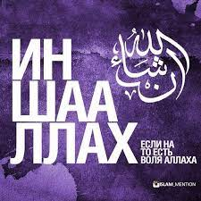

Что значит Ин Ша АллаҺ?
إ
ن شاء الله (иншАллах, ин ша’ Аллах, иншАлла) – одна из наиболее употребляемых мусульманами фраз. В переводе с арабского она означает «Если пожелает Аллах». Это выражение используют применительно к событиям и действиям, которые должны произойти в будущем.
Всё происходящее в нашем мире случается исключительно с ведома Всевышнего, а говоря «ин ша Аллах», человек признаёт это и заявляет о готовности смириться с Волей Создателя. Ясное доказательство необходимости произношения этих слов мы можем найти в Священном Кyр`ане. В суре «Пещера» сказано:
И никогда не говори: «Я сделаю это завтра». Если только этого не пожелает Аллах (18:23-24)
Эти аяты были ниспосланы после того, как мекканские многобожники, стремившиеся очернить Пророка Мухаммада ﷺ, по совету иудеев задали ему вопросы, а Посланник Аллаха ﷺ пообещал дать ответ на следующий день, но не смог этого сделать, так как откровение ему пришло через 15 дней. Именно после ниспослания этих аятов мусульмане начали использовать фразу, которую иногда обозначают также в виде «ин ша Аллах».
Когда лучше говорить «ин ша Аллах»?
Произношение этой фразы не относится к числу обязательных (фард) действий, а значит, если вы не говорите её, то греха не последует. Желательно это выражение ставить в начало предложения. Например, «Ин ша Аллах, в пятницу я встречусь со своим другом». Если же вы по небрежности забыли употребить его, то в данном случае работает правило «лучше поздно, чем никогда».
Допустимо ли сказать «ин ша Аллах» на родном языке?
Дозволено проговаривать фразу «Если позволит Аллах» на русском или любом другом языке, это не запрещено. Но всё же лучше использовать арабский вариант, так как наш Пророк ﷺ и его сахабы использовали язык Кyр`ана.
Когда нельзя говорить «ин ша Аллах»?
1. Если речь идёт о запретном
Например, мы не можем сказать: «Ин ша Аллах, я выпью рюмку водки». Да, всё, в том числе и греховное, происходит по Воле Господа миров, но в данном случае употреблять эту фразу будет некорректно.
2. При совершении дуа
Когда мы произносим мольбу к Всевышнему, то здесь также не следует использовать слова «ин ша Аллах». То есть мы не можем просить у своего Творца: «Прости мне грехи, если пожелаешь». Дуа должно произноситься в повелительном наклонении и без частиц «если пожелаешь», «если посчитаешь нужным» и т.д. То есть в мольбе мы должны говорить: «помоги мне», «прости мои грехи», «защити моих родных по Своей Милости» и т.д.
3. Если мы говорим о том, чего делать не собираемся (или попросту лжём)
То есть мы не можем сказать: «Ин ша Аллах, я пойду завтра на работу», если мы точно не пойдём по причине нежелания или лени. Но бывают такие ситуации, когда человек что-то хочет сделать, но не может в силу каких-либо причин. В таком случае допустимо использовать «ин ша Аллах», так как здесь нет намерения врать, а имеются объективные причины, которые могут решиться с дозволения Всевышнего.
Википедия

Ещё больше
Предедущий проект